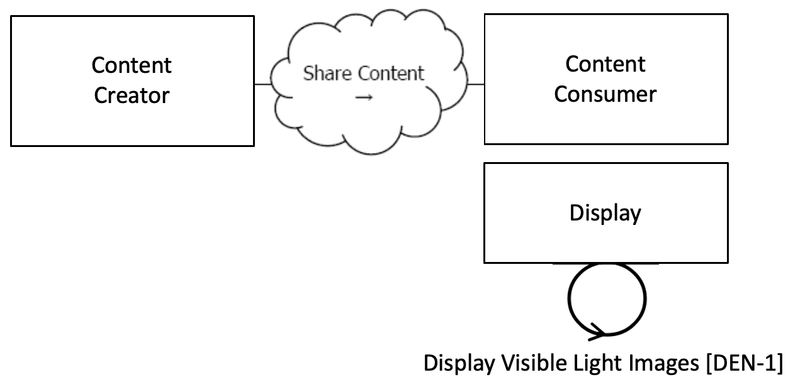

3.1 OIP Actors, Transactions, and Content Modules#
This section defines the actors, transactions, and/or content modules in this profile. General definitions of actors are given in the Technical Frameworks General Introduction Appendix A. IHE Transactions can be found in the Technical Frameworks General Introduction Appendix B. Both appendices are located at https://profiles.ihe.net/GeneralIntro/index.html.
Figure 3.1-1 shows the actors directly involved in the OIP Profile.
A product implementation using this profile may group actors from this profile with actors from a separate workflow or transport profile specify how images are exchanged between actors.

Figure 3.1-1 OIP Actor Diagram
Table 3.1-1 lists the transactions content module(s) defined in the OIP Profile. To claim support with this profile, an actor shall support all required content modules (labeled “R”) and may support optional content modules (labeled “O”).
Table 3.1-1 OIP Actors, Transactions, and Content Modules
Actors |
Content Modules |
Transactions |
Optionality |
Reference |
|---|---|---|---|---|
Content Creator & Content Consumer |
VL Photographic Image IOD Definition |
– |
R (Note 1) |
DEN TF-3: 7.3.1 |
Video Photograpic Image IOD Definition |
– |
R (Note 1) |
DEN TF-3: 7.3.2 |
|
Encapsulated 3D Manufacturing Model IOD Definition |
– |
R (Note 1) |
DEN TF-3: 7.3.3 |
|
Secondary Capture IOD Definition |
– |
R (Note 1) |
DEN TF-3: 7.3.3 |
|
Surface Scan Mesh IOD Definition |
– |
R (Note 1) |
DEN TF-3: 7.3.4 |
|
Multi-frame True Color Secondary Capture Image IOD Definition |
– |
R (Note 1) |
DEN TF-3: 7.3.5 |
|
Secondary Capture IOD Definition |
– |
R (Note 1) |
DEN TF-3: 7.3.6 |
|
Image Display |
– |
Display Visible Light Images [DEN-1] |
R |
DEN TF-2: 3.1 |
Note 1: A Content Creator shall support at least one of these Content Modules (i.e., IOD Defintiions). A Content Consumer shall support all Content Modules listed.
3.1.1 Actor Description and Actor Profile Requirements#
Most requirements are documented in DEN: TF-2: Transactions and DEN TF-3: Content Modules. This section documents any additional requirements on profile’s actors.
3.1.1.1 Content Creator#
In the OIP profile, the Content Creator is a ‘generic’ actor for a system that creates DICOM images. To identify which type(s) of DICOM images a Content Creator supports, it shall specify support one or more of the Options in Table 3.2-1.
In the ‘real-world’ OIP Content Creator actor may be:
DICOM-compliant devices such as physical cameras, intra-oral scanners, smart phone apps. These acquire and create medical images while a patient is present.
A system or software that interfaces to a non-DICOM ready modality in order to integrate that modality into dental care workflows by creating DICOM output compliant with this profile. Examples of a non-DICOM ready modality includes conventional photographic SLR cameras, a smart phone with a generic photo app, etc.
A system or software that converts existing contents of a non-DICOM archive into DICOM images compliant with this profile
3.1.1.2 Content Consumer#
In the OIP profile, the Content Consumer is a ‘generic’ actor for a system that consumes DICOM objects (e.g., images, movies, 3D models) that are compliant with the requirements in DEN TF-3: 7.3.x of this profile. Using these DICOM objects, Content Consumer performs functions that are relevant to its application, e.g., rendering the images for a user, storing the DICOM objects in an archive, extracting information from the DICOM metadata for reporting purposes, etc.
3.1.1.3 Image Display#
The Image Display is a specialized Content Consumer that implements requirements to provide standardized display functionality to ensure …
<TO DO: Describe to goal of standardized display requirements here. You may want to point to the ADA spec driving these requirements.>
An Image Display actor in the OIP Profile shall implement all display requirements in DEN TF-2: 3.1.4.1.3. This provides mandatory support for Viewsets VS-01, VS-02, VS-03, and VS-04 as defined in ANSI/ADA Standard No. 1100 “Dentistry - 2D and 3D Orthodontic/Cranial/Forensic Photographic Views and View Sets”.
A Image Display actor may optionally support Standard Display and/or the Hanging Protocol. See Table 3.2-1.